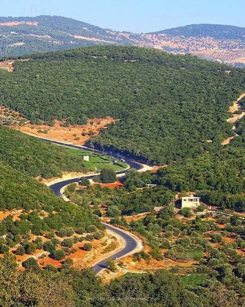
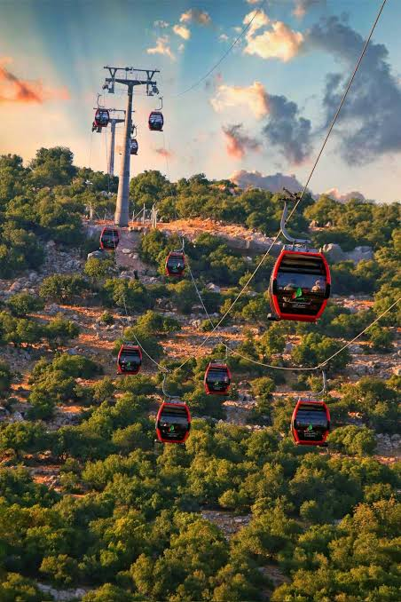
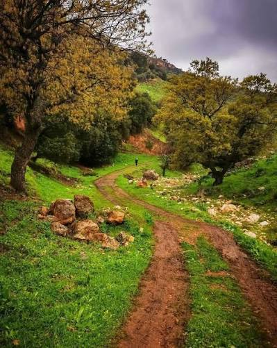

محمية غابات عجلون
منطقة طبيعية تضم غابات وأشجاراً متنوعة ومسارات بيئية ومرافق للزوار.

تُعد عجلون من أجمل المناطق الطبيعية في الأردن، وتشتهر بغاباتها الكثيفة وتلالها الخضراء ومواقعها التاريخية.
تقع محافظة عجلون في شمال الأردن، وتتميز بتضاريسها الجبلية ومناخها المعتدل نسبياً.
تشتهر بالقلعة التاريخية والغابات والمحميات الطبيعية والمسارات المخصصة للمشي والتنزه.
تتميز عجلون بغطائها النباتي المتنوع وأشجار البلوط والصنوبر والعديد من النباتات البرية.
تُعرف قلعة عجلون أيضاً باسم قلعة الربض، وهي قلعة تاريخية تقع على قمة جبل في محافظة عجلون.
بُنيت في العصر الأيوبي خلال القرن الثاني عشر الميلادي بأمر من عز الدين أسامة، أحد قادة صلاح الدين الأيوبي.
كان الهدف من بنائها حماية المنطقة ومراقبة الطرق والممرات المهمة، إضافة إلى تعزيز الدفاع عن المنطقة.
تتميز عجلون بمجموعة من المواقع الطبيعية التي تجذب محبي البيئة والمغامرات والاسترخاء.
منطقة طبيعية تضم غابات وأشجاراً متنوعة ومسارات بيئية ومرافق للزوار.

تتميز بالأشجار الكثيفة والمساحات الخضراء والمناظر الطبيعية الجميلة.

تجربة تتيح للزوار مشاهدة المناظر الطبيعية من الأعلى والاستمتاع برحلة جوية مميزة.

مسارات للمشي واستكشاف الغابات والتضاريس الطبيعية في المنطقة.
تتميز غابات عجلون بتنوع نباتي وحيواني مهم، وتضم أشجار البلوط والسنديان والصنوبر والعديد من النباتات البرية.
كما تُعد موطناً لعدد من الحيوانات والطيور البرية، مما يجعلها منطقة مهمة للسياحة البيئية والمحافظة على التنوع الحيوي.
تساعد المحميات الطبيعية في حماية البيئة وتشجيع الزوار على التعرف على أهمية المحافظة على الحياة البرية.
الاستمتاع بالمشي بين الأشجار والمساحات الطبيعية الخضراء.
اكتشاف التاريخ الأيوبي والتعرف على العمارة الدفاعية.
الاستمتاع بمشاهدة المناظر الطبيعية من الأعلى.
التقاط صور الغابات والجبال والحياة البرية.
التعرف على النباتات والحيوانات وأهمية المحافظة على البيئة.
اكتشاف المنتجات الريفية والأطعمة والحرف التقليدية.
الاسترخاء: الاستمتاع بالأجواء الطبيعية والابتعاد عن ضوضاء المدن.
التعلم: التعرف على التاريخ الأيوبي والتنوع الحيوي.
المغامرة: تجربة المشي في المسارات واستكشاف الغابات.
الثقافة: اكتشاف التراث المحلي والمنتجات الريفية.